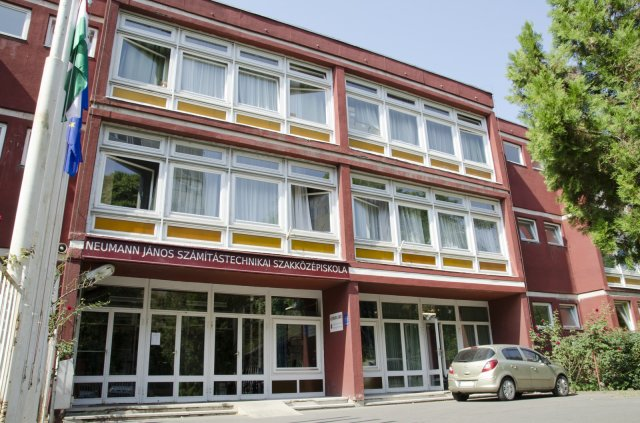
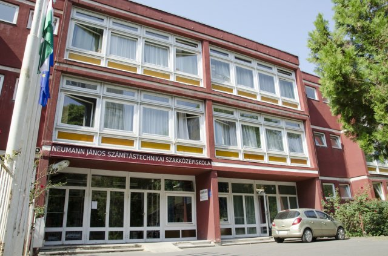

A kezdetek (1970-es évek-1987)
Az épület az 1970-es években, Zugló egyik lakótelepén belül épült, 1973-ban kezdte meg működését. Ekkor még általános iskolaként üzemelt, egészen 1987-ig.
Közgazdasági és Számítástechnikai, majd Számítástechnikai Szakközép, később Informatikai Technikum (1988 óta)
Az iskola fontosabb történései, pontokba szedve:
- 1988. szeptember 1-jén kezdte meg működését.
- 1988-ban középiskolai szinten az országban itt létesült elsőként számítógép-hálózat.
- 1989-ben vette fel Neumann János nevét az iskola. Ekkor a neve Neumann János Közgazdasági és Számítástechnikai Szakközépiskola lett.
- 1989-ben országos szinten elsőként modernizálták a középiskolai programozóképesítést.
- 1991-től sajátos nevelési igényű diákok oktatását is vállalja az iskola (vak, gyengénlátó, mozgássérült és hallássérült tanulók).
- 1992-től az iskola neve Neumann János Számítástechnikai Szakközépiskola (NJSZKI) lett.
- 1992-től évente indul egy szakiskolai előkészítő osztály, ahol számítógép-kezelő szakma oktatása folyik.
- 1992-ben az országban először itt zajlott számítógépen a programozás érettségi.
- 1993-ban elsőként itt indult középfokú térinformatikus-képzés.
- A középiskola 5. évfordulója, 1993 óta létezik az "Év Tanára" cím, az év tanára munkájának elismerésére.
- Ugyanebben az évben itt készült az ország első teljes középiskolai térinformatikai tankönyvsorozata.
- 1994-ben szerepelt először sikerrel kutatásfejlesztésben neumannos diákcsapat: Braille-nyomtató találmányával Benedek Balázs, Nagy Tamás és Mezei Sándor első helyezést ért el az Országos Magyar Ifjúsági Tudományos és Innovációs Versenyen.
- 1995-ben első helyezést ért el Baranyai Marcell a XII. Garay-országos programozói versenyen.
- 1997-től egyedi oktatási rendszerben három OKJ-s szakmát tanított dákjainak az intézmény.
- 1998-ban sikeres pályázattal csatlakozott a világbanki oktatási programhoz. Ebben a tanévben ünnepelte a szakközépiskola fennállásának 10. évfordulóját.
- 2000-ben az iskola nyert a COMENIUS 2000 I. modell pályázatán.
- 2000 szeptemberétől a szakiskola képzése átalakult speciális feladatot ellátó tagozattá, elvégzése után a diákok választhattak a további egyéves szakképzés vagy a hároméves, középiskolai érettségit nyújtó képzés között.
- 2001 óta az intézmény közhasznú alapítványként is működik (Tiszta Szívvel Alapítvány)
- 2002 márciusa óta az iskola ECDL vizsgaközpontként is működik.
- 2003-tól a szakiskolai képzés átalakult szakközépiskolai speciális hátránykompenzációs képzéssé.
- 2004-től az intézmény részt vett a vak tanulók integrált oktatását segítő HEFOP 2.1.2 programban.
- 2004-ben indult az idegen nyelvi előkészítő (NYEK-es) tagozat.
- 2005-ben az ISEF világversenyén Rátai Dániel Leonar3Do háromdimenziós találmányával 6 nagydíjat nyert el.
- 2005-től Fenyvessy Gábor vezeti az iskolát Gergely András alapító igazgató munkája után.
- 2006-tól ORACLE Akadémia központ a Neumann János Számítástechnikai Szakközépiskola.
- 2008-tól Microsoft Akadémia is működik itt.
- 2011 tavaszán 3 évre az intézmény elnyerte az Ökoiskola címet, 2014-ben ezt további 3 évre meghosszabbították (2018. szeptember 1. óta Örökös Ökoiskola)
- 2012 tavaszán csatlakozott a Cisco Hálózati Akadémiájához, a 2012-13-as tanévben pedig már lehetőséget nyújt a tananyag elsajátítására és abból való vizsgázásra.
- 2016 óta Menyhárt Erika vezeti az iskolát, mint az intézmény igazgatója.
- 2016 július 1-je óta az intézmény a Budapesti Műszaki Szakképzési Centrum tagintézménye.
- A 2020-21-es tanévvel kezdődően az intézmény Informatikai Technikumként működik tovább, a tananyag, illetve a tagozati rendszer is változott (5 éves képzés, idegen nyelvi előkészítő évfolyamos tagozat esetében 6 éves képzés).
Az iskola változása - Részletesebben
1988-ban vált az épület Közgazdasági Szakközépiskolává, az első tanévben négy osztálynyi elsős középiskolás diákkal, 13 tanárral és az adminisztratív, technikai segítőkkel. Ügyviteltechnológia helyett azonban a számítástechnika, azon belül is a "programozás alapjai" volt a fő oktatási anyag. Mivel nem számítástechnikára szánták az iskolát, kezdetben csupán 4 gépterem volt, ez a szám is később hatalmasat nőtt. 1989-ben vehette fel az iskola Neumann János nevét, ekkor Neumann János Közgazdasági és Számítástechnikai Szakközépiskola, 1992 óta pedig hivatalosan is Neumann János Számítástechnikai Szakközépiskola (NJSZKI) néven működhetett, egészen 2019-es Technikummá való válásáig.
A legelső gépek még Commodore-64-es típusúak voltak, később TAP 34-es, és Syster gépek szolgálták az oktatási igényeket a 90-es évek közepéig. Ezeket később felváltották az XT-k, AT-k 386-osok és a 486-osok. Régen a géppark kb. 3 évente teljesen kicserélődött, nagyobb változás azonban már 7-8 éve nem történt. Elméleti órákon programterveket kellett írni struktúráltan (a lyukkártyák is használatban voltak még ekkor), majd gyakorlaton az alsóbb osztályok BASIC, felsőbb osztályok PASCAL-ban programoztak a diákok. Fájlkezelésre Norton Commandert használtak, grafikus problémák megoldására Clippert. Az Internet maga ekkor még újdonságnak számított, otthon nem is volt mindenkinek elérhető, így az iskola "Nyílt napokat" biztosított, hogy néhány órára való feliratkozáskor programozhassanak a tanulók szabadidejükben - sokan házi feladatok megcsinálására -.
A manapság szokásos osztálykirándulások, a gólyabál régebben is léteztek már. A sportkörök nagyrésze szintén úgy létezik a Neumann-ban, mint amióta fennállnak: Labdarúgás, kosárlabda, floorball, röplabda, kézilabda, torna, úszás, karate. Ezen sportágakban rengeteg kiemelkedő eredmény született: Világbajnokságokon, paralimpián, Budapest-bajnokságokon, Országos bajnokságokon, de a legtöbb eredményt a Zugló Kupa csapatai érték el. A tanári közösségek is összetartóak voltak, sok tanári kirándulást szerveztek.
A tanári kar nagyrésze sajnos már nem láthatja, hová fejlődött az iskola, hiszen sokan nyugdíjba mentek, többen pedig sajnos már elhunytak. Egy Gergely András vagy egy Merész Éva tanárnő nélkül például meg sem születhetett volna, számos tanár munkája példamutató, még napjainkban is.
 

Volt diákok, illetve volt, és jelenlegi tanárok személyes tapasztalatai, véleményei
Riport Fehérné Thomas Györgyivel - Róla és apjáról, a Németh László-díjas Thomas Miklósról
-Mettől meddig járt a Neumannba?
-1992-1996-ig jártam a Neumannba.
-Miket tanultak ott?
-Akkor Neumann János Közgazdasági és Számítástechnikai Szakközépiskola volt a hivatalos neve. Közismereti tantárgyakból csak a fontosabb érettségire felkészítő tantárgyak voltak: magyar; matematika; történelem; társadalmi ismeretek, talán egy évig kémia, földrajz; 2 évig fizika; angol és testnevelés (biológia, művészetek, ének, rajz óránk egyáltalán nem volt). Szakmai tantárgyak közül a fő tantárgy a programozás volt, ha jól emlékszem heti két óra elméleti és talán 4 óra gyakorlati óra gépteremben; számítógépek és alkalmazás technikájuk: ebből 1 óra elmélet, 2 óra gyakorlat. Ezen kívül volt közgazdasági ismeretek óránk, szervezés (ez valami vállalkozói ismereteket akart jelenteni, de túl mély nyomot nem hagyott bennem) és fakultációban banküzemtant is tanulhattunk.
-Mi volt az akkori legfejlettebb technológia, amiről esetleg tud?
-'92-ben még IBM PC/XT gépekkel dolgoztunk, aztán AT-n. Nem emlékszem igazán, hogy végül az érettségit talán már 386 esetleg 486-oson csinálhattuk? Szinte végig DOS-os alapon dolgoztunk, szövegszerkesztőnek az első két évben egy magyar fejlesztésű programot használtunk az Ékszert (ezt egyébként az iskola akkori tanárai fejlesztették - Gunzinám tanár úr), később Context-et használtunk szövegszerkesztésre. Úgy emlékszem, hogy az érettségi évében talán már tanultunk World-t és Excel-t, de ebben nem vagyok biztos. Az viszont biztos, hogy a DOS-al párhuzamosan, illetve utána Norton Commandert használtunk file-kezelésre. Programozásból elsősorban a Turbo Pascal nyelvet tanultuk, ez grafikára nem volt alkalmas, ezért a másik nyelv a Clipper volt, amit kevésbé részletesen, de tanultunk - ez alkalmasabb volt grafikai problémák megoldására. Programozásból 5 órás gyakorlati érettségink volt. Két feladatot kellett megoldani, az elsőt Pascal-ban (egy reptér teljes adatbáziskezelő rendszerét kellett megírni), itt az első órában be se kapcsolhattuk a gépet, előbb papíron struktogramot kellett készíteni. A másik feladat rövidebb volt, arra már nem emlékszem, de azt kellett Clipper-ben írni. Az érettségit még floppy lemezen kellett beadni és a forráskódot kinyomtattuk. Ha valakinek csak egy pontosvessző miatt akár nem indult volna el a program, az megbukott volna. Ezen kívül még volt programozásból és számítógépek és alkalmazástechnikájuk tantárgyakból szóbeli érettségi is. Az érettségi tételek között már volt szó az internetről, de még nem igazán használtuk - nagyon újdonságnak számított.
-A mai korhoz képest mennyire voltak mások az osztály szokásai (pl.: programok, mint kirándulások, órarend, órák stb.)?
-Az osztályprogramok szerintem hasonlóak lehettek a mai programokhoz. Volt gólyabál, a Neumann napok mindig nagyon érdekesek voltak, többször előfordultak hírességek a vendégek között (pl. Szendrő Szabolcs hegymászó a "Féllábbal a csúcson" c. könyv szerzője, Hirtling István színművész, egy-egy költő, író). Fordító és szavaló versenyeken egy alkalommal Pécsi Ildikó színművésznő zsűrizett. Sportversenyek tanár-diák meccsek (foci, kosár, röplabda, floorball), Zugló-kupán rendszeresen versenyeztünk az iskola csapataival - én játszottam kosárlabda, kézilabda, röplabda meccsen is, kézilabdán bronzérmet szereztünk. Három osztálykirándulásra emlékszem - Szilvásvárad, Budai Vár, Tata.
Abban az időben még nagyon kevés diáknak volt otthon saját számítógépe - de még a családoknak sem volt, ezért minden héten két nap - ha jól emlékszem szerda és csütörtök - úgy nevezett "nyílt nap" volt. Ez azt jelentette, hogy délután a géptermekbe előre fel lehetett iratkozni, ha valaki leckét szeretett volna csinálni, hiszen otthon nem tudtuk. Az aulában az oszlopokra voltak lapok ragasztva a jelentkezéshez és bizony gyorsnak és leleményesnek kellett lenni ahhoz, hogy valaki bejusson dolgozni, mert nagyon nagy volt az igény rá. Talán 3-4 órára lehetett jelentkezni, és előfordult, hogy csak úgy tudtunk bejutni, hogy közben másik gépterembe kellett átmenni, mert a papíron már csak úgy maradt hely, hogy az 1-1 órát más-más gépterembe tudtuk csak lefoglalni. Jó volt viszont, hogy volt mindig felügyelő tanár a szakmások közül, akitől lehetett ilyenkor kérdezni, ha valamit nem értettünk.
-Az apja mettől meddig tanított a Neumannban?
-Édesapám Thomas Miklós 1990-2010-ig, nyugdíjazásáig tanított a Neumannban.
-Milyen tantárgyat/tantárgyakat tanított?
-Matematika-fizika, mindig volt osztályfőnök is, és munkaközösség vezető.
-Hogyan nézett ki, milyen volt akkor az iskola maga?
-Szerintünk kinézetre ugyan olyan volt. Minden évben volt őszi, tavaszi festménytárlat az aulában, amire mindig más festőművész hozta kiállítani a képeit.
-Mi volt az akkori legfejlettebb technológia, amiről esetleg tud?
-90 előtt Commodore 64-es gépekkel dolgoztak tudomásunk szerint.
-A tanári közösség mennyire volt másabb a mai korhoz képest?
-Jó, összetartó közösség volt, minden évben voltak tanári kirándulások, akár többnaposak is: Csehország, Tata, Egerszalók, Erdély, Noszvaj.
-Mennyit változott az iskola, ami alatt ott tanított?
-Kb. 3 évente a teljes géppark kicserélődött. Elsőbb éves diákok még a régebbivel, az érettségiző az újabbal dolgozott. Minden évfolyamon osztályonként vak - nagyothalló - mozgássérült gyerekek is tanultak. Sok tanulmányi versenyen vettek részt diákok - előfordult olyan is, aki az Arany Dániel versenyt megnyerte, és evvel már első középiskolai évében felvételt nyert az egyetemre. OKTV-n is mindig volt 1-5 helyen valaki, Kenguru Matekversenyen is szép eredmények voltak. Édesapám Németh László Díjat kapott (miniszteri kitüntetés) a vakokkal való foglalkozásért: tapintható ábragyűjteményt készített nekik (geometria, függvények, halmazok), valamint ő készítette el az un. Beszélő Függvénytáblázatot (olyan formátumban írta meg a függvénytáblázatot, amit fel tudott olvasni a képernyőolvasó program, országosan azóta is ezt használják), érettségik adaptálása vakbaráttá hasonló formában (matek, magyar, történelem mindig, de bármilyen tantárgy az érettségire). Bárczi Gusztáv Gyógypedagógiai Főiskoláról rendszeresen hospitáltak a vakok óráin. Iskola régi diákja Ráday Dániel 3D-ben mozgó "egér", "madár" - biztos találsz róla valamit az interneten. Az iskola régi diákjai közé tartozik Bereczky Zoltán színművész is.
Riport Orbán Sándor tanár úrral
-Mióta tanít itt a Neumannban?
-1990 óta, testnevelés tanárként.
-A sporteszközök mennyire változtak az elmúlt 30 évben?
-Nem sokat, a legmodernebb eszközeink inkább a digitális mérőeszközök.
-Mennyire változtak a szokások, ugyanazokat a sportokat játsszák a diákok, mint régen? A sportkörök mennyire érdeklik még a diákokat?
-Nagyjából ugyanazokat sportolják a fiatalok, mint régebben: Labdarúgás, kosárlabda, röplabda, kézilabda. Szerencsére még vannak, akik járnak sportkörökbe, de az a helyzet, hogy egyre kevesebben aktívabbak a testnevelés órákon is. A technológia maga változott, a gyerekek pedig inkább azzal foglalkoznak, mint a sportolással. Nagyon fontos a testmozgás.
-Mit gondol, jó úton halad az iskola?
-Sajnos elég kevés támogatást vagyok, de az előbbiek ellenére is természetesen azt gondolom, sokat fejlődik még és nagyon jó úton halad az iskola!
Riport Veresné Murányi Mariann tanárnővel
-Mióta tanít itt a Neumannban?
-1990 óta tanítok a Neumannban.
-Ugye matek-fizika szakos tanár? Mennyit változott a technológia?
-Igen, matek-fizika szakot tanítok. Hogy mennyit változott a technológia? Nagyon sokat.
-A tananyag, az érettségi követelmények mennyit változtak?
-A tananyag maga nagyon sokat változott. Az érettségi korábban sokkal nehezebb feladatokat tartalmazott, majd az új generáció miatt könnyíteni kellett rajta. Azonban az elmúlt években ismét elkezdtek nehezíteni a feladatokon.
-Végül annyit szeretnék kérdezni, mit gondol az iskola jövőjéről?
-Hát, azt gondolom, amíg van, aki informatikus szeretne lenni, az fog jönni és az iskola fennmarad. Egyébként jó úton halad.
Riport Kaufmann Péter igazgatóhelyettessel
-Mettől meddig járt a Neumannba, mióta tanít itt?
-1994-98-ig tanultam itt, és 2004 óta tanítok az intézményben.
-Az angol órai tananyag mennyire változott?
-Nem igazán, maximum a nyelvtan és néhány szó maga.
-Mennyire nehéz az igazgatóhelyettesi munka, mennyire részletes, komplikált, fontos?
-Egy nagyon fontos, bonyolult munka, nem is tudok többet mondani.
Ön szerint mennyit változott a tanári kar, a szokásaik, az osztályközösségek?
-A tanári kar összetétele nagyon sokat változott, a szokásaik nem igazán. Az osztályközösségeknél pedig generációnként változik, a technológia fejlődésével is.
-Mit gondol, hogyan alakul az iskola jövője?
-Nagyon jó irányba haladunk, folyamatosan fejlődünk.

Források: Neumann János Számítástechnikai Szakközépiskola, Budapest - Jubileumi évkönyvek 1998 és 2008 - Külön köszönet Orbán Sándor tanár úrnak ezekért, NJSZKI hivatalos weboldala valamint:
| Közreműködött: |
|---|
| Fehérné Thomas Györgyi, a Neumann diákja 1992-96-ig |
| Thomas Miklós, 1990-2010-ig a Neumann tanára |
| Mező György, 1988 óta a Neumann tanára |
| Orbán Sándor, 1990 óta a Neumann tanára |
| Veresné Murányi Mariann, 1990 óta a Neumann tanára |
| Kaufmann Péter, a Neumann diákja 1994-98-ig, valamint tanára 2004 óta |
Vissza a főoldalra